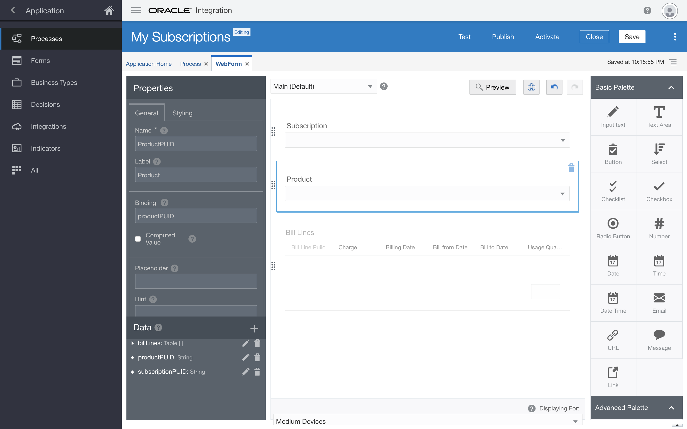
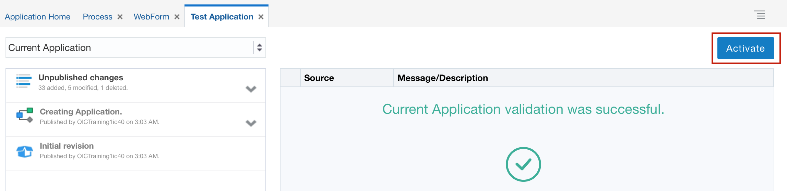
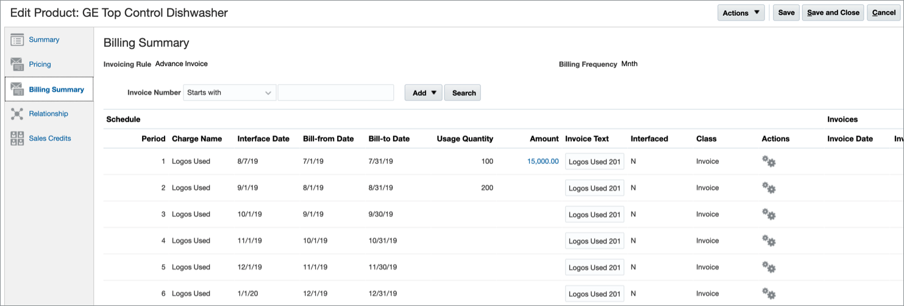

Oracle Integration Process - Hands-On Lab
Oracle Integration Process - Hands-On Lab
Before You Begin
Your lab facilitator will provide you the following information to access the environments used in this lab.
Select your OIC Environment:
Enter your User Number:
OIC URL:
OIC User Name:
Your OIC Password will be provided by your lab facilitator.
Some steps in this tutorial have a  icon next to them. Click this icon to copy the snippet of text to your clipboard and then paste where needed.
icon next to them. Click this icon to copy the snippet of text to your clipboard and then paste where needed.
Background
In this hands-on lab, you'll create a Process App to automate updating subscription usage data in Oracle Engagement Cloud Subscription Management.
This lab is a continuation of a companion lab where you create an integration used by the Process App in this lab. If you've completed the integration lab, feel free to use the integration you created. If you have not completed the integration lab, don't worry, a completed integration has been made available for you to use.
The business scenario is to create a self-service Subscription Management application that allows subscribers of a good or service to self report subscription usage. Once subscription usage data is reported, the application will automate the review and approval of that data, and if approved, automate updating Oracle Engagement Cloud Subscription Management with the usage data. This scenario represents a common business process where requests are made, reviewed, approved, and result in updates to an enterprise application. Digitizing and automating these types of business process can yield significant benefits.
What is a Process App?
A Process App orchestrates the activities necessary to execute an end-to-end business process. These activities are digital representations of the individual business process steps and include examples such a user's request that initiates a business process, automated decision services that define business process policies, tasks to engage business process stakeholders responsible for decisions and work, and integrations to interact with enterprise applications relevant to the business process.
This lab will highlight several key benfits of Oracle Integration Process:
- Automate end-to-end business processes that touch multiple stakeholders including requestors and decision makers.
- Engage stakeholders where most effective, whether that be through self-service portals, dedicated task lists, actionalble emails, digial assistants, mobile apps, or SaaS applications.
- Automate manual repetitive tasks by leveraging application integrations.
Sign In
Access to Oracle Integration is secured through Oracle Identity Cloud Service. Users may be granted access to all the Oracle Integration environments in a cloud tenancy, or they may be restricted to specific environments. They may be assigned different roles in each environment.
Open a browser to the OIC URL.
OIC URL:
Enter your OIC User Name.
OIC User Name:
Enter your OIC Password provided by your lab facilitator and click Sign In.
The Welcome page appears. Check out the tour, videos, and links to learn more. Keep scrolling to find more useful links.
Click Home.
The Home page displays an overview with the current state of your instance. You can drill down to get information about available Processes, Integrations, and Visual Applications.

You are now logged in and ready to use Oracle Integration. In the next section we will create a Process App.
Create a Process App
Oracle Integration Process simplifies the effort and skillsets required to create Process Apps that digitize and automate end-to-end business processes. We will create our Process App from a QuickStart App that provides us a good starting point.
What is a QuickStart App?
A QuickStart App a ready to run Process App with all the implementation details included for you to play, test, and activate the application. QuickStart Apps can be configured within a pre-defined set of constraints defined by the QuickStart App author. The QuickStart App author can optionally allow the QuickStart App to be completely customized beyond the constraints they defined. In short, a QuickStart App is a template to create, configure, and customize a fully functioning Process App. This allows users to rapildly create ready to run Process Apps that can be tailored to their specific needs.
From the Home page’s Navigation menu, select Processes, and then select Process Applications.
This is where you create Process Apps. Depending on previous activity in your environment you may already have some Process Apps listed. If you do, just ignore them, we will create our own.
- Click Create.
- Hover over the Start with a QuickStart box, and then click Browse.
Locate the Subscription Management QuickStart, and click Create.

- In the Create Application dialog, in the Name field, enter
My Subscriptions. Click Create.
The QuickStart App appears.
Notice how the options in this design mode are limited to Configure, Test, and Activate. This provides a simplified interface to quicky get Process Apps up and running.

You have successfully created a Process App using a QuickStart App. In the next section we will configure our new application.
Configure the QuickStart
The Subscription Management Process App you just created comes ready to run but lacks some core functionality required by the business scenario. You will make the necessary modifications to complete this Process App.
We'll start by examining how a QuickStart App author can define specific configuration options that can be tailored with little understanding of the underlying Process App assets.
First, when it's time to run your Process App, you will need to be able to identify your application from your classmates. We will use QuickStart App configuration to uniquely identify your Process App with your user number.
Second, the Process App contains two email notification activities that will send an email to the subscriber when their usage data has either been accepted or rejected. The Process App is configured to use a temporary email address. We will use QuickStart configuration to update the send To email field for both of these email notification activities with your email address. Of course in a real solution we would use the email address associated with the logged in user however, since you are using a training account we will specify this through QuickStart App configuration.
From the QuickStart Overview page, click Configure.
The QuickStart Configure page appears.

Click the Configure Process Start Title configuration option to open the configuration editor.
The configuration editor appears.

Replace the Title text with
User Submit Subscription Update.Remember this name for later, when you run the Process App.
Click
 to close the configuration editor.
to close the configuration editor.The QuickStart Configure page appears.
Click the Configure Usage Accepted Notification Email configuration option to open the configuration editor.
The configuration editor appears.

- Replace the temporary email address in the send To email field with your email address.
Click
to close the configuration editor.The QuickStart Configure page appears.
- Make the same change to the Configure Usage Rejected Notification Email configuration option.
Click Publish to publish your changes. Enter a comment in the Publish Application dialog to note your changes and click Publish.

You have completed the QuickStart App configurations. In the next section we will expose the underlying Process App assets and make some more extensive customizations.
Review the Process App
The QuickStart App View provides a simplified interface to quickly configure and deploy a Process App. But the changes you can make are limited to what the QuickStart App author defined. Switching to the Application View exposes all of the underlying Process App assets and gives you full access to completely customize the application.
On the QuickStart App page, click the Switch to Application View link.

The Process Composer page appears.
Once in Application View, the left side navigation pane displays the various asset types that make up a Process App. By default, the Processes asset type is selected and this Process App contains a single Process. We will open this Process and review it's structure.

With the Processes navigation item selected, click the Process asset to open it in the structured process editor.
The Process Canvas page appears.
The process flow defines the structure and flow of each step within the end-to-end business process. Review the structure and flow of this process, starting with the Submit Subscription Update Form Start activity, the Approve Subscription Update Approve activity, the Approved? Gateway activity, the Update Subscription Submit activity, the Notify activities, and finally the Completed End Event activity. Explore the types of activites availble from the BPMN pallette.
Be Careful not to make any changes just yet!

Edit the Form
You’ll add two controls to the form that each call the source system and return values for customers to choose from.
- Click the purple Start activity titled Submit Subscription Update.
Click
 and select Open Form.
and select Open Form.The form editor appears. It contains a central canvas, a side pane for setting properties for selected controls, and a side palette pane with basic and advanced controls you can add to the form.
Add a Select control to select the subscription:
Drag and drop a Select control from the Basic Palette to the top of the form.
Select the control you just added.
Notice how the Properties pane changes: when you select a control, the properties panel displays its properties. When you click outside of a control, the properties panel displays the entire form’s properties.
- In the Properties pane, locate the General tab.
- In the Name field, enter
SubscriptionPUID. - In the Label field, enter
Subscription. Click outside the new control.
Notice how the label is now Subscription and the select control is a dropdown field.

Add a Select control to select the product:
- In the form editor, drag and drop a Select control below the one you just created.
- Select the control you just added.
- In the Properties pane, locate the General tab.
- in the Name field, enter
ProductPUID. In the Label field, enter
Product.
- Click the
 Preview button to see the new fields in your form.
Preview button to see the new fields in your form. - Click to close the preview.
Link the Integrations
Here you’ll add two active integrations for use in your process.
- From the Navigation menu, select Integrations.
- Click Link to an Integration, and then select Browse Integrations.
- In the Use an Integration dialog, search for and select Get Subscriptions, and then click Create.
On the Integrations page, click Create, and then click Use an Integration.

- In the Use an Integration dialog, search for and select Get Subscription Products by Subscription, and then click Create.
Both integrations are now available.
Call the Integrations
Now you’ll configure the new controls to each call an integration and return values. The second control will depend on the first.
Configure the Subscription List
Let’s configure this select control to call the integration and return subscription items in its response.
- Select the WebForm tab to display the form editor.
- On the form canvas, select the Subscription control.
- In the Properties pane, scroll down until you see the Options Source section, and select Connector.
- From the Connector list, select GetSubscriptions.
- From the Resource list, select resources.
- From the Operation list, select getResource.
- In the Response section, in the Options List field, enter
response.items. - In the Label Binding field, enter
displayNameand then select displayName. In the Value Binding field, enter
subscriptionNumberand then select subscriptionNumber.
- Click Preview.
- Click the Subscription list, and notice subscription options returned from the integration appear.
- Click to close the preview.
Configure the Product List
Let’s configure this select control to return product items in its response. The control should be hidden when the form first appears. Once the user selects a subscription, this Product field should appear, and display product items for the selected subscription.
- On the Form canvas, select the Product control.
- In the Properties pane, scroll down until you see the Options Source section, and select Connector.
- From the Connector list, select GetSubscriptionProductsBySubscription.
- From the Resource list, select resources.
- From the Operation list, select getResource.
- In the Template Parameters section, from the SubscriptionPUID field, select Control value.
- From the field next to SubscriptionPUID, select SubscriptionPUID.
- In the Response section, in the Options List field, enter
response.items. - In the Label Binding field, enter
displayNameand then select displayName. - In the Value Binding field, enter
subscriptionProductPuidand then select subscriptionProductPuid. - In the Properties pane, select Skip Upon Load.
- Select the Hide attribute.
Notice that the Product control is disabled to show it's hidden.
- On the Form canvas, select the Subscription control.
In the Properties pane, scroll down until you find the Events section.
Click
 .
.From the list next to the Event Name field, select On Change.

Click
 to display the Expression Editor dialog.
to display the Expression Editor dialog.The On Change dialog appears.
Add an action to load the Product list values when the user selects a subscription:
- Click + Action.
- From the Control Name list, select ProductPUID.
- From the Action list, select Refresh Connector.
Add an action to show the values for the Product list values when the user selects a subscription:
- Click + Action.
- From the Control Name list, select ProductPUID.
- From the Action list, select Show.

- Click OK.
Let's preview the behavior you just added to the form controls:
- On the Form canvas, click Preview.
- From the Subscription list, select
New Start Gyms - 3022. - Notice how the
Product list displays its recently loaded values after the Subscription field changes. - From the Product list, select
- SR41101. - Click to close the preview.
- On the Form canvas, click
Configure the Bill Lines Table
Let’s configure the table to display values returned from an integration, and to refresh when the selected product changes.
- From the Navigation menu, select Integrations.
- On the Application Home tab, click Create.
- Select Use an Integration.
- In the Use an Integration dialog, search for and select Get Subscription Product Bill Lines by Product.
- Click Create.
- Select the WebForm tab to return to the Form Editor page.
- Select the Bill Lines table control.
Configure the connector:
- In the Properties pane, select Use Data from Connector.
- From the Connector list, select GetSubscriptionProductBillLinesByProduct.
- From the Resource, select resources.
- From the Operation list, select getResource.
- In the Template Parameters section, from the SubscriptionProductPUID field, select Control value.
- From the field next to SubscriptionProductPUID, select ProductPUID.
- From the SubscriptionPUID field, select Control value.
- From the field next to SubscriptionPUID, select SubscriptionPUID.
- In the Response section, in the Options List field, enter
response.items. - Click the BillLinePuid field, enter
billLinePuidand then select billLinePuid. - In the Charge field, enter
invoiceTextand then select invoiceText. - In the BillingDate field, enter
dateToInterfaceand then select dateToInterface. - In the BillFromDate field, enter
dateBilledFromand then select dateToInterface. - In the UsageQuantity field, enter
usageQuantityand then select usageQuantity. - Select Skip Upon Load.
- Scroll up and select Hide.
- On the Form canvas, select the Product control.
- In the Properties pane, scroll down until you find the Events section.
- Click .
- From the list next to the Event Name field, select On Change.
- Click to display the Expression Editor dialog.
Add an action that refreshes the table when the selected product value changes:
- Click + Action.
- From the Control Name list, select BillLines.
- Leave the default selection (Self) for the Which? field as is.
- From the Action list, select Refresh Connector.
Add an action that shows the table when the selected subscription and product value change:
- Click + Action.
- From the Control Name list, select BillLines.
- Leave the default selection (Self) for the Which? field as is.
- From the Action list, select Show.
- Click OK.
Let's preview the behavior you just added to the table control:
- On the Form canvas, click Preview.
-
From the Subscription list, select
New Start Gyms - 3022.Notice how the
Product list displays its recently loaded values after the Subscription field changes. -
From the Product list, select
- SR41101.Notice how the Bill Lines table displays its recently loaded values after the Product field changes.
- Click to close the preview.
- On the Form canvas, click
Automate the Update Task
Your last task is to configure an integration that updates the source system, Oracle Engagement Cloud, with all entries users make in the form.
Link an Integration
Here you’ll link an integration, then place the integration onto the process flow as its final step: updating the subscription product bill lines.
- From the Navigation menu, select Integrations.
- On the Application Home tab, click Create.
- Select Use an Integration.
- In the Use an Integration dialog, in the Search field, enter update, and then select Update Subscription Product Bill Lines. If you completed the companion integration lab, please feel free to use the integration you created.
- Click Create.
- Select the Process tab to display the process editor.
- Select the Update Subscription human task from the flow.
- Click
 .
. - Insert the integration you previously linked onto the flow line.
- Expand the Integrations category in the BPMN palette.
- Drag and drop the UpdateSubscriptionProductBillLines integration to the same position on the flow as the deleted human task.
Configure the Integration’s Input
Let’s map data input from the web form into the integration.
- Select the integration.
- Click .
Select Open Data Association.

On the Data Association page, click
 .
.
This action automatically maps the subscription and product values users select in the form to the corresponding source fields in Oracle Engagement Cloud:
- Process.Data Object.webFormDataObject.subscription ⟶ subscriptionPUID
- Process.Data Object.webFormDataObject.product ⟶ subscriptionProductPUID
- Add a third data association for the bill lines table:
- In the Data Objects tree, expand Process.
- Expand Data Object.
- Expand webFormDataObject.
- Drag and drop billLines to the New Association field in the Process section.
- In the Update subscription product bill lines tree, expand body.
Drag and drop billLine from the Update subscription product bill lines tree to the blank field that maps the value for webFormDataObject.billLines.
The data association icon turns red and an error is displayed indicating that the arrays cannot be mapped as is.

Create a transformation to map bill lines values:
- Click
 .
. Select Transform.
The Transformation dialog appears.
Click Create.
The Transform dialog appears.
- In the Transformation dialog, enter
Bill Line. Click Create.
The Data Association page changes to the Transform page.
- Drag and drop to associate billLinePuid and billLinePUID.
In the New Association field next to the WebFormBillLines tree, enter
string(usageQuantity).On the same row, in the field next to , enter
usageQuantity.
- Click Save.
You exit the Transform page and return to the Data Association page.
- Click
Configure the Integration’s Output
Let’s map data output from the integration back to the process.
Select the Output tab.

- In the Data Objects tree, expand Process, then expand Data Object and select it.
- In the Data Objects tree, click .
In the Add Data Object dialog, complete these entries:
- In the Name field, enter
updateBillLinesResponse. - In the Data Type section, select Business.
- Select OracleIntegrations.UpdateSubscriptionProductBillLines.Responsewrapper .

- In the Name field, enter
- Click Add.
Click
.An association between bodyOutput and updateBillLinesResponse was automatically configured.

Click Apply.
All data associations are saved, and you return to the Process tab.
Test the Process Application
Let’s see the subscription update process in action, as a user would.
Click Publish.
Enter a comment and click Publish
Click Test.

Click Activate.
In the Activate to Test dialog, ensure that Add Me to All Roles is selected, and click Activate.
A confirmation message informs you that the application was successfully activated.
- Click OK.
Click Try in Test Mode.
The My Apps page appears in a new tab in your web browser.
-
In the Search field, enter
User Submit Subscription Update, and select your process.The form you edited appears.
From the Subscription list, select
New Start Gyms - 3022.- From the Product list, select
- SR41101. - In the Bill Lines table, update the Usage Quantity for the first row to
100, and the next row to200. Click Submit.
An instance was created.
- From the Navigation menu, select My Tasks.
Select the task you just created.
Notice the quantities you just added in the form.
Click APPROVE.
The quantities are updated in the source system.
